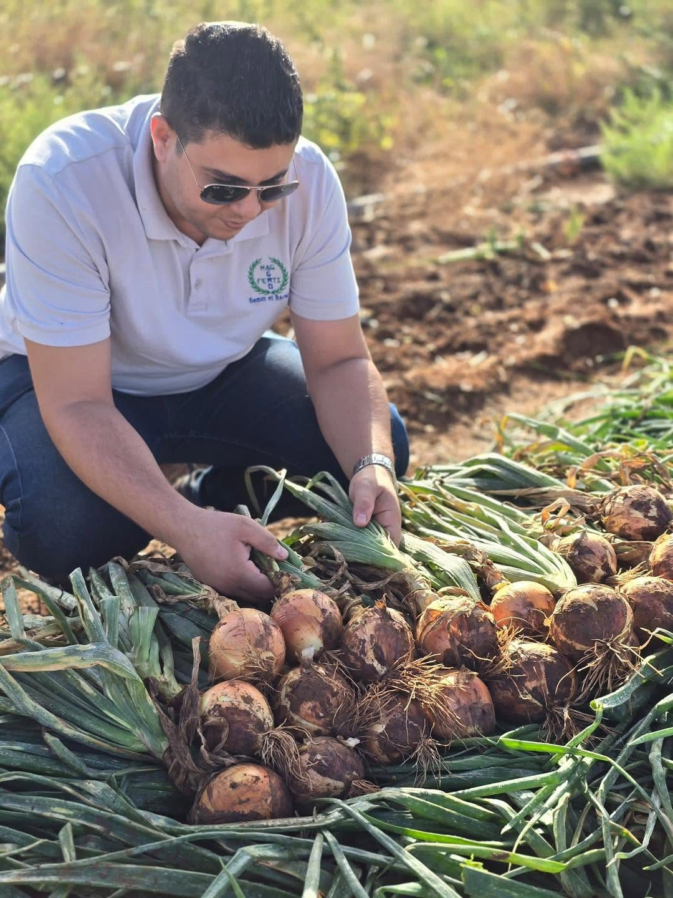

Une entreprise algérienne d'import-export de produits et de matériel agricole, installée à Mostaganem.
Agro Ferti Mag a démarré par l'importation de matériel d'irrigation, puis s'est développée dans les engrais, les biostimulants et les semences.
Notre siège est à Kharrouba (Mostaganem), avec une annexe à Achaâcha. Une équipe d'ingénieurs technico-commerciaux accompagne les agriculteurs et le réseau de revendeurs, de l'essai en parcelle jusqu'à la récolte.

Démarrage avec l'importation de matériel d'irrigation.
Lancement de la gamme nutrition et des biostimulants Synagro.
Distribution de semences potagères hybrides et essais en parcelle.
Partenariats BASF, Nunhems, COMPO EXPERT et développement vers le Centre et l'Est.
Nous ne distribuons que des produits de fabricants reconnus, avec leurs fiches techniques.
Nos ingénieurs sont au champ, avec l'agriculteur, à chaque étape de la culture.
Un stock à Mostaganem et un réseau de revendeurs pour livrer partout en Algérie.

Diplôme en agriculture ou sciences agronomiques, plus de 5 ans d'expérience terrain, permis de conduire.
Pour la création de votre site, Webminds vous offre un mois de visuels pour votre page Facebook et Instagram.